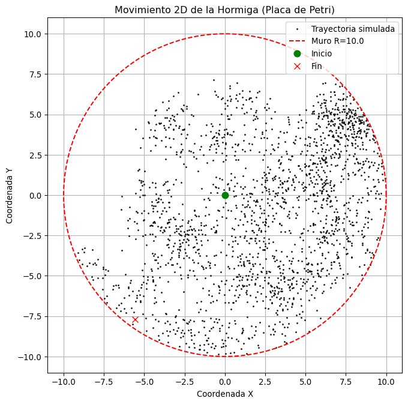
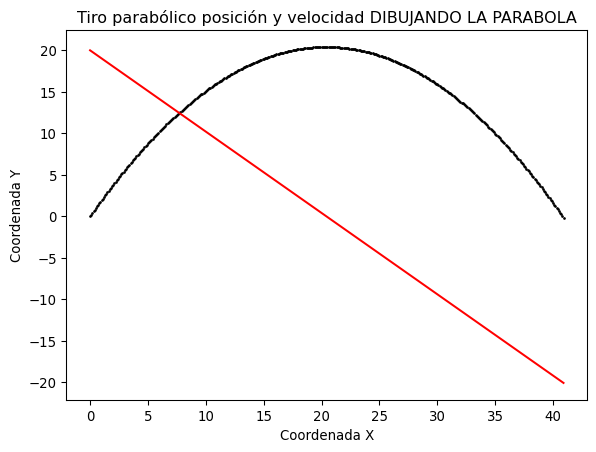
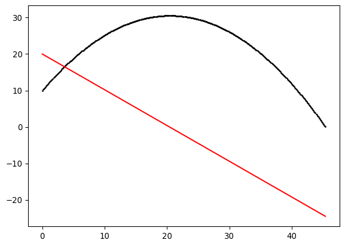
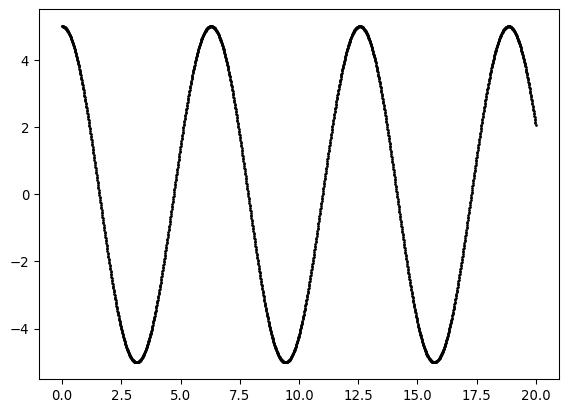
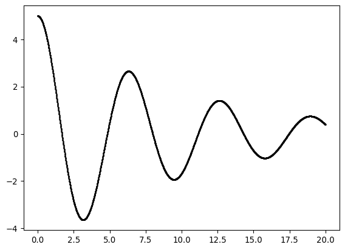
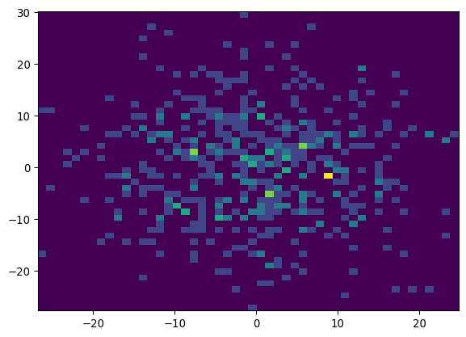
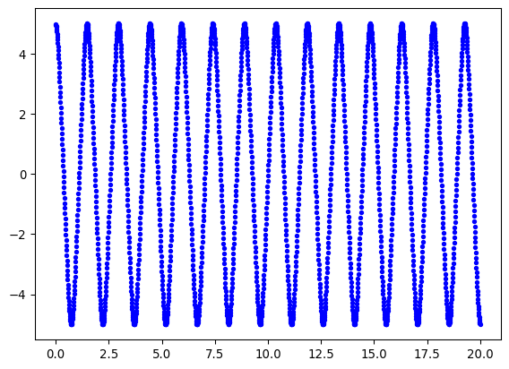
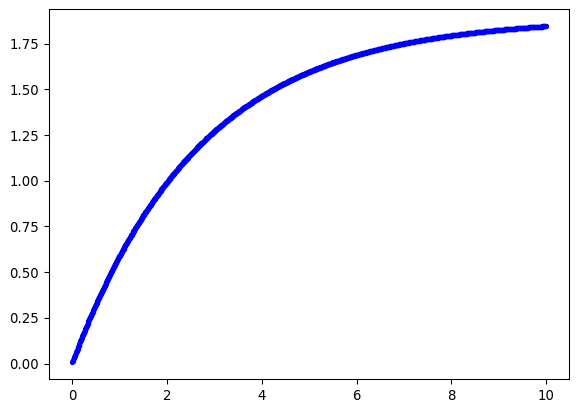
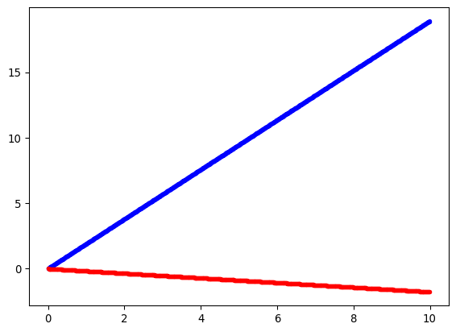
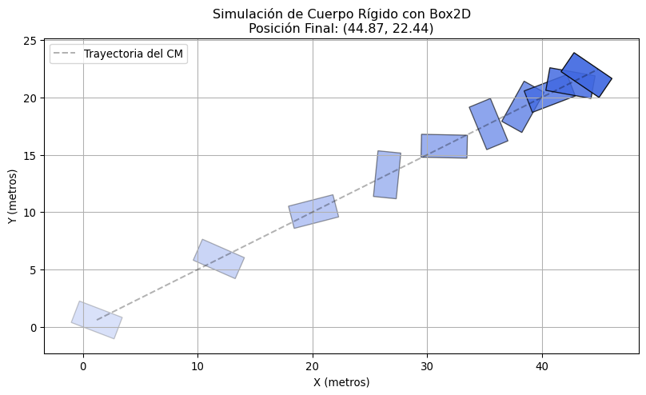

Bukle batean sartzean, buelta bakoitzean zenbaki aleatorio bat da.
Seigarrena: geminiren simulazioa
oraindik ez dut guztiz ulertzen baina bueno kopiatuko dut
Code
import numpy as npimport matplotlib.pyplot as plt# 1. Datos inicialesx =0.0v =1.0dt =0.5pared_derecha =10.0pared_izquierda =0.0historial = []# 2. Simulación (200 pasos)for t inrange(200):# A. Moverse x = x + v * dt# B. Chequear choques (Aquí está la magia)if x > pared_derecha: v =-1.0* v # ¡Rebote! Cambia de signo x = pared_derecha # Para que no se "escape" numéricamenteif x < pared_izquierda: v =-1.0* v # ¡Rebote al otro lado! x = pared_izquierda historial.append(x)# 3. Ver el resultadoplt.figure(figsize=(8, 3))plt.plot(historial)plt.title("Partícula rebotando en una caja 1D")plt.ylabel("Posición X")plt.xlabel("Tiempo")plt.grid(True)plt.show()
Imagina que tienes una hormiga experimental dentro de una placa de Petri circular (un recinto redondo). La hormiga se mueve de forma aleatoria, pero no puede atravesar las paredes de plástico.
Objetivo: Simular la trayectoria de la hormiga durante 200 pasos y dibujar el resultado, asegurándote de que nunca se escape del círculo.
Datos Físicos: Radio de la placa (\(R\)): 10 cm. Posición inicial: El centro \((0,0)\).Velocidad: La hormiga da pasos aleatorios (ruido) en cada iteración. La Regla (Física): Si la hormiga intenta dar un paso que la lleve a una distancia mayor que \(R\) del centro, choca.
Code
import numpy as npx_hist=[0]y_hist=[0]posizioa=np.array([0,0])kont=0R=10.0print("tus muertos")for i inrange(2000): pausoa=np.random.uniform(-1,1,2) posizioa=posizioa + pausoa d=np.linalg.norm(posizioa)if d<=R: x_hist.append(posizioa[0]) y_hist.append(posizioa[1])elif d>R: posizioa=posizioa - pausoa kont=kont+1print(kont)#Zirkulua marrazteko: # 1. Datos del Círculo (La Pared, R=10)R =10.0angulo = np.linspace(0, 2* np.pi, 360) # 360 puntos de 0 a 360 gradoscirculo_x = R * np.cos(angulo) # R cos(theta)circulo_y = R * np.sin(angulo) # R sin(theta)# 2. Plotting (Donde dibujas el círculo)# Hau ez da nirea, begiratuimport numpy as npimport matplotlib.pyplot as plt# (Asumimos que aquí arriba ya calculaste x_hist e y_hist)# 1. Creamos la figura y el lienzoplt.figure(figsize=(8, 8)) # 2. Dibujamos la trayectoria (puntos negros pequeños para el camino)plt.plot(x_hist, y_hist, 'k.', markersize=2, label='Trayectoria simulada')plt.plot(circulo_x, circulo_y, 'r--', label=f'Muro R={R}')#plt.plot(x, y, 'k.', markersize=2, label='circulo')# 3. Dibujamos el inicio y el fin (para claridad)plt.plot(x_hist[0], y_hist[0], 'go', markersize=8, label='Inicio') # Punto verde para inicioplt.plot(x_hist[-1], y_hist[-1], 'rx', markersize=8, label='Fin') # Cruz roja para fin# 4. Ajustes del reporteplt.title("Movimiento 2D de la Hormiga (Placa de Petri)")plt.xlabel("Coordenada X")plt.ylabel("Coordenada Y")plt.gca().set_aspect('equal', adjustable='box') # Hace que el círculo se vea como un círculo, no como un óvaloplt.legend()plt.grid(True)# 5. Mostrar la gráfica (¡Y guardar el output en Quarto!)plt.show()
tus muertos
75

Orain jatorrira bueltatuko da paretarekin txokatzean
Code
import numpy as npx_hist=[0]y_hist=[0]posizioa=np.array([0,0])R=10.0print("tus muertos")for i inrange(2000): pausoa=np.random.uniform(-1,1,2) posizioa=posizioa + pausoa d=np.linalg.norm(posizioa)if d<=R: x_hist.append(posizioa[0]) y_hist.append(posizioa[1])elif d>R: posizioa=([0,0])print("talka!")#Zirkulua marrazteko: # 1. Datos del Círculo (La Pared, R=10)R =10.0angulo = np.linspace(0, 2* np.pi, 360) # 360 puntos de 0 a 360 gradoscirculo_x = R * np.cos(angulo) # R cos(theta)circulo_y = R * np.sin(angulo) # R sin(theta)# 2. Plotting (Donde dibujas el círculo)# Hau ez da nirea, begiratuimport numpy as npimport matplotlib.pyplot as plt# (Asumimos que aquí arriba ya calculaste x_hist e y_hist)# 1. Creamos la figura y el lienzoplt.figure(figsize=(8, 8)) # 2. Dibujamos la trayectoria (puntos negros pequeños para el camino)plt.plot(x_hist, y_hist, 'k.', markersize=2, label='Trayectoria simulada')plt.plot(circulo_x, circulo_y, 'r--', label=f'Muro R={R}')#plt.plot(x, y, 'k.', markersize=2, label='circulo')# 3. Dibujamos el inicio y el fin (para claridad)plt.plot(x_hist[0], y_hist[0], 'go', markersize=8, label='Inicio') # Punto verde para inicioplt.plot(x_hist[-1], y_hist[-1], 'rx', markersize=8, label='Fin') # Cruz roja para fin# 4. Ajustes del reporteplt.title("Movimiento 2D de la Hormiga (Placa de Petri)")plt.xlabel("Coordenada X")plt.ylabel("Coordenada Y")plt.gca().set_aspect('equal', adjustable='box') # Hace que el círculo se vea como un círculo, no como un óvaloplt.legend()plt.grid(True)# 5. Mostrar la gráfica (¡Y guardar el output en Quarto!)plt.show()
Tienes que calcular la trayectoria de un proyectil lanzado con una velocidad inicial \(\vec{v}_0\) y bajo la influencia constante de la gravedad.
Variables Iniciales: Define la gravedad (\(g = 9.8\) m/s²), la velocidad inicial vectorial (\(\vec{v}_0 = [10, 20]\) m/s) y el paso de tiempo (\(\Delta t = 0.01\) s).
Lo voy a hacer para 20 segundos y dibujando una parabola cada 0.1 segundos. Cuando toque el suelo para.
Code
import numpy as npimport matplotlib.pyplot as pltv0=np.array([10,20])dt=0.01g=9.8posizioa=np.array([0.0,0.0])historiax=[0.0]historiay=[0.0]historiav=[20.0]for i inrange(2000): posizioa[0]=dt*v0[0] posizioa[1]= v0[1]*dt -0.5*g*(dt)**2 historiax.append(posizioa[0]) historiay.append(posizioa[1]) historiav.append(20.0-g*dt) dt=dt+0.01if posizioa[1]<0.0:print("Lurra ukitu du")breakplt.plot(historiax, historiay, 'k.', markersize=2, label='Trayectoria simulada')plt.plot(historiax,historiav, 'r-', label=f'Velocidad R={R}')plt.title("Tiro parabólico posición y velocidad DIBUJANDO LA PARABOLA")plt.xlabel("Coordenada X")plt.ylabel("Coordenada Y")plt.show()
Lurra ukitu du

Orain zenbakizko metodoak erabiliko ditut.
Code
import numpy as npimport matplotlib.pyplot as pltposizioa=np.array([0.0,10.0])abiadura=np.array([10.0,20.0])azelerazioa=np.array([0.0,-9.8])dt=0.01x_hist=[]y_hist=[]v_hist=[]for i inrange (2000): x_hist.append(posizioa[0]) y_hist.append(posizioa[1]) v_hist.append(abiadura[1]) posizioa= posizioa + dt*abiadura abiadura= abiadura + dt*azelerazioaif posizioa[1]<0:print("Lurra ukitu du")break#Marraztekoplt.plot(x_hist, y_hist, 'k.', markersize=2)plt.plot(x_hist, v_hist, 'r-')plt.show()
Lurra ukitu du

Osziladore harmonikoa
Tienes que simular un resorte sin fricción regido por la Ley de Hooke (\(F = -kx\)).
Ecuación de Movimiento: La aceleración es \(a(t) = - \frac{k}{m} x(t)\). (Definamos \(k/m = 1\)).
Variables Escaladas: Usa \(\Delta t = 0.01\) y posición inicial \(x_0 = 5\), velocidad inicial \(v_0 = 0\).
Integrador de Euler: Dentro del bucle, debes actualizar primero la velocidad y luego la posición
Code
import numpy as npimport matplotlib.pyplot as pltposizioa=5.0abiadura=0.0dt=0.01t=0.0x_hist=[]t_hist=[]for i inrange(2000): x_hist.append(posizioa) t_hist.append(t) azelerazioa=-posizioa abiadura=abiadura + dt*azelerazioa posizioa=posizioa + dt*abiadura t=t + dtplt.plot(t_hist, x_hist, 'k.', markersize=2)plt.show()

Code
import numpy as npimport matplotlib.pyplot as pltposizioa=5.0abiadura=0.0gamma=0.2dt=0.01t=0.0x_hist=[]t_hist=[]for i inrange(2000): x_hist.append(posizioa) t_hist.append(t) azelerazioa=-posizioa - abiadura*gamma abiadura=abiadura + dt*azelerazioa posizioa=posizioa + dt*abiadura t=t + dtplt.plot(t_hist, x_hist, 'k.', markersize=2)plt.show()

Orain osziladore harmoniko indargetua
Random walk
Tienes que simular la Difusión de Partículas (Movimiento Browniano) durante muchos pasos y analizar dónde terminan las partículas.
Setup: Inicializa 500 partículas, todas en el origen \(\vec{r} = [0, 0]\). Puedes usar un array 2D de numpy (particulas = np.zeros((500, 2))).
Dos bucles: uno exterior (500 veces) para cada particula y uno interior (100 veces) para cada paso de cada particula.
Code
import numpy as npimport matplotlib.pyplot as pltpartikulak=np.zeros([500,2])posizioakx=[]posizioaky=[]for i inrange(500): finala=np.array([0.0,0.0])for j inrange (100): pausoa=np.random.normal(0,1,2) finala=finala+pausoa partikulak[i]=finala posizioakx.append(finala[0]) posizioaky.append(finala[1])#plt.plot(posizioakx, posizioaky, 'r.')plt.hist2d(posizioakx, posizioaky, bins=50)plt.show()

Ariketa zailagoak
Oszilatzaile ez lineala eta energiaren kontserbazioa
Fuerza No-Lineal: Usa la ley de fuerza \(F = -k x^3\) (un resorte que se opone mucho más a medida que se estira). Define \(m=1\) y \(k=1\).
Integración: Haz el bucle usando el Integrador de Euler (como hiciste con el muelle amortiguado) para \(N=1000\) pasos.
Dibuja la Energía Total (historia_E) en función del tiempo (el índice del bucle).
Code
import numpy as npimport matplotlib.pyplot as plthist_E=[]hist_x=[]hist_t=[]dt=0.01t=0.0N=1000posizioa=5.0abiadura=0.0for i inrange(2000): epot=0.0 ezin=0.0 azelerazioa=-posizioa**3 abiadura= abiadura + azelerazioa*dt posizioa= posizioa + abiadura*dt epot=0.25*(posizioa**4) ezin=0.5*(abiadura**2) etotal=epot + ezin hist_E.append(etotal) hist_x.append(posizioa) hist_t.append(t) t= t + dt#plt.plot(hist_t, hist_E, 'r.')plt.plot(hist_t, hist_x, 'b.')plt.show()

Inurrien higidura
Inurri bakarra higidura zuzenean
Lehenengo inurri bakar bat linealki karga bultzatzen. Paperean erabilitako datuak: \(f_0=2.8\) eta \(\gamma= 1.48\). Masa gero eta handiagoa izan orduan eta gehiago kostatuko zaio abiadura finalara iristea.
Inurriak marruskadura du lurrarekin.
Code
import numpy as npimport matplotlib.pyplot as pltgamma=1.48f0=2.8m=4.0N=1000dt=0.01hist_x=[]hist_t=[]hist_v=[]abiadura=0.0posizioa=0.0denbora=0.0for i inrange(N): indarra=f0-abiadura*gamma azelerazioa=indarra/m abiadura= abiadura + azelerazioa*dt posizioa= posizioa + abiadura*dt hist_t.append(denbora) hist_x.append(posizioa) hist_v.append(abiadura) denbora= denbora + dtplt.plot(hist_t, hist_v, 'b.')plt.show()

N inurri 2D-tan
Orain bi talde ditugu, bakoitza \(N=50\) inurriekin, bata koordinatua dago eta bestea ez. Konparatuko dira bien arteko distantziak jatorriarekiko creo. Batean guztiak x+ norabidean tiratzen dute eta bestean modu aleatorioan bakoitzaren tiraketa norabidea finkatu da hasieran eta ikusiko da eboluzioa. \(f=0\) eta \(\gamma\) aurreko berdinak dira.
Code
import numpy as npimport matplotlib.pyplot as pltgamma=1.48f0=2.8m=1.0N=50Nt=1000dt=0.01indarrax=0indarray=0for i inrange(N): angelua=np.random.uniform(0, 2*np.pi) indarrax= indarrax + f0*np.cos(angelua) indarray= indarray + f0*np.sin(angelua)#inurri bakoitzak egindako ekarpena batutaFm=np.array([indarrax, indarray]) #koordinazio gabekoaFb=np.array([N*f0, 0.0])hist_x=[]hist_t=[]hist_y=[]hist_vx=[]hist_vy=[]abiadurax=0.0abiaduray=0.0posizioax=0.0posizioay=0.0gammat= gamma*Ndenbora=0.0azelerazioax=0.0azelerazioay=0.0for i inrange(Nt): indartx= Fm[0] - abiadurax*gammat indarty= Fm[1] - abiaduray*gammat azelerazioax=indartx/m azelerazioay=indarty/m abiadurax= abiadurax + azelerazioax*dt abiaduray= abiaduray + azelerazioay*dt posizioax= posizioax + abiadurax*dt posizioay= posizioay + abiaduray*dt hist_x.append(posizioax) hist_y.append(posizioay) hist_vx.append(abiadurax) hist_vy.append(abiaduray) hist_t.append(denbora) denbora= denbora +dth_x=[]h_v=[]vx=0.0px=0.0ax=0.0for i inrange(Nt): ax=N*(f0-gamma*vx) vx=vx +ax*dt px=px + vx*dt h_x.append(px) h_v.append(vx)plt.plot(hist_t, h_x, 'b.')plt.plot(hist_t, hist_x, 'r.')plt.show()

Grafika honetan kargaren mugimendua x ardatzean adieratzen da, bi talderen kasuan . Lerro gorria ia ez da aldentzen jatorritik, indar netoa ia nulua delako, aleatorioki bultzatzen dutelako. Lerro urdinean aldiz, N=50 inurrien indarrak batzen dira x norabidean eta linealki mugitzen da F konstante delako.
Kodea exekutatzen den bakoitzean lerro gorria aldatzen da, aleatorioa delako indar netoa.
Physics enginearen proba
Hau kopiatutako kodea da, ez dut ezer egin baina da ikusteko ea ondo doan box2d
Code
import Box2Dfrom Box2D.b2 import (world, polygonShape, staticBody, dynamicBody)# 1. Crear el Mundo (Con gravedad cero, como en el experimento)# El paper dice que es movimiento "overdamped", así que no queremos gravedad hacia abajo.mundo = world(gravity=(0, 0), doSleep=True)# 2. Crear el Suelo (Cuerpo Estático)suelo = mundo.CreateStaticBody( position=(0, 0), shapes=polygonShape(box=(50, 1)),)# 3. Crear la Carga en forma de T (Cuerpo Dinámico)# Esto es lo que no podíamos hacer antes: ¡Definir una forma!carga = mundo.CreateDynamicBody(position=(0, 10))carga.CreatePolygonFixture(box=(2, 1), density=1, friction=0.3)print(f"¡Box2D instalado! Versión: {Box2D.__version__}")print(f"Posición inicial de la carga: {carga.position}")# 4. Simular un paso de tiempotimeStep =1.0/60vel_iters =6pos_iters =2mundo.Step(timeStep, vel_iters, pos_iters)print(f"Posición tras un paso (sin fuerzas): {carga.position}")
¡Box2D instalado! Versión: 2.3.8
Posición inicial de la carga: b2Vec2(0,10)
Posición tras un paso (sin fuerzas): b2Vec2(0,10)
otra prueba
Code
import Box2Dfrom Box2D.b2 import (world, polygonShape, dynamicBody)import numpy as npimport matplotlib.pyplot as pltfrom matplotlib.patches import Polygon # Para dibujar formas rellenas# --- 1. CONFIGURACIÓN DEL MUNDO FÍSICO (Box2D) ---# Creamos un mundo sin gravedad (como tu mesa de laboratorio)mundo = world(gravity=(0, 0), doSleep=True)# Creamos el cuerpo (La Carga)# position=(0,0) -> Empieza en el centro# angularDamping=0.5 -> Fricción de rotación (para que no gire eternamente)# linearDamping=0.5 -> Fricción de movimientocarga = mundo.CreateDynamicBody( position=(0, 0), angle=0, linearDamping=0.5, angularDamping=0.5)# Le damos forma y "materia"# box=(2, 1) -> Es un rectángulo de 4 metros de ancho x 2 de altocarga.CreatePolygonFixture(box=(2, 1), density=1, friction=0.3)# --- 2. EL IMPULSO INICIAL (El "Patanadón") ---# Le damos un golpe fuerte al principio para que se mueva y gire# ApplyLinearImpulse(fuerza, punto_de_aplicacion, wake=True)# Al aplicar la fuerza descentrada (en la esquina), provocamos giro (Torque)carga.ApplyLinearImpulse(impulse=(200, 100), point=carga.GetWorldPoint(localPoint=(1, 1)), wake=True)# --- 3. BUCLE DE SIMULACIÓN ---timeStep =0.05total_steps =100# Listas para guardar la "película"historia_pos = [] # Guardará (x, y) del centrohistoria_vertices = [] # Guardará la posición de las 4 esquinas en cada momentoprint("Simulando...", flush=True)for i inrange(total_steps):# Avanzar la física un paso mundo.Step(timeStep, 6, 2)# Guardar centro pos = carga.position historia_pos.append([pos.x, pos.y])# Guardar la forma exacta (las 4 esquinas rotadas)# Box2D nos da los vértices ya rotados con .fixtures[0].shape.vertices# Pero están en coordenadas locales, hay que sumarle la posición del cuerpo vertices_mundo = [carga.GetWorldPoint(v) for v in carga.fixtures[0].shape.vertices] historia_vertices.append(vertices_mundo)# --- 4. VISUALIZACIÓN "GUAPA" ---fig, ax = plt.subplots(figsize=(10, 6))# Dibujar la trayectoria del centro (línea punteada)hx = [p[0] for p in historia_pos]hy = [p[1] for p in historia_pos]ax.plot(hx, hy, 'k--', alpha=0.3, label='Trayectoria del CM')# Dibujar la "foto" de la caja cada 10 pasos (para ver cómo gira)for i inrange(0, total_steps, 10):# Convertimos los vértices de Box2D a formato de Matplotlib poly_puntos = [(v[0], v[1]) for v in historia_vertices[i]]# Creamos el polígono# Alpha cambia para que se vea desvaneciéndose (efecto fantasma) alpha_val =0.2+0.8* (i / total_steps) rectangulo = Polygon(poly_puntos, closed=True, facecolor='royalblue', edgecolor='black', alpha=alpha_val) ax.add_patch(rectangulo)# Ajustes finalesax.set_aspect('equal')ax.set_title(f"Simulación de Cuerpo Rígido con Box2D\nPosición Final: ({hx[-1]:.2f}, {hy[-1]:.2f})")ax.set_xlabel("X (metros)")ax.set_ylabel("Y (metros)")ax.grid(True)plt.legend()plt.show()
Simulando...

kuantikako gauza
Code
import numpy as npimport matplotlib.pyplot as plt# Configuración del gráficoplt.figure(figsize=(10, 6))plt.style.use('seaborn-v0_8-whitegrid')# Rango espacialr = np.linspace(0, 10, 500)R_pozo =3# Radio del pozo# --- CASO 1: No resonante (Potencial débil) ---# Dentro del pozo: sin(k1 * r)# Queremos que no llegue a 90 grados en R_pozo. Digamos 45 grados (pi/4)k1 = (np.pi/4) / R_pozo u_normal = np.zeros_like(r)u_normal[r < R_pozo] = np.sin(k1 * r[r < R_pozo])# Fuera del pozo (k->0): Linea recta tangente al bordeval_R1 = np.sin(k1 * R_pozo)slope_R1 = k1 * np.cos(k1 * R_pozo)u_normal[r >= R_pozo] = val_R1 + slope_R1 * (r[r >= R_pozo] - R_pozo)# Tangente proyectada hacia atrás (a finita)tangente_normal = val_R1 + slope_R1 * (r - R_pozo)# --- CASO 2: Resonancia (a -> infinito) ---# Dentro del pozo: sin(k2 * r)# Queremos que sea EXACTAMENTE 90 grados (pi/2) en el borde.k2 = (np.pi/2) / R_pozou_resonancia = np.zeros_like(r)# Multiplicamos por 1.2 solo para que se vea distinta amplitud visualmenteamp =1.0u_resonancia[r < R_pozo] = amp * np.sin(k2 * r[r < R_pozo])# Fuera del pozo: La pendiente es 0 (cos(pi/2) = 0). Es constante.val_R2 = amp * np.sin(k2 * R_pozo)u_resonancia[r >= R_pozo] = val_R2 # Se mantiene plana# Plottingplt.axvspan(0, R_pozo, color='lightgray', alpha=0.5, label='Zona del Pozo (Potencial)')# Plot Caso Normalplt.plot(r, u_normal, label='Onda Normal (a finita)', color='tab:blue', linewidth=2.5)plt.plot(r, tangente_normal, '--', color='tab:blue', alpha=0.5, label='Tangente corta el eje')# Plot Caso Resonanciaplt.plot(r, u_resonancia, label='Resonancia (a = $\infty$)', color='tab:red', linewidth=3)# La tangente es horizontal, no la dibujamos entera para no ensuciar, pero se ve.# Puntos claveplt.scatter([R_pozo], [val_R2], color='black', zorder=5)plt.text(R_pozo +0.2, val_R2 +0.05, 'Salida Horizontal\n(Pendiente = 0)', color='tab:red', fontweight='bold')plt.scatter([R_pozo], [np.sin(k1*R_pozo)], color='black', zorder=5)plt.text(R_pozo +0.2, np.sin(k1*R_pozo) -0.15, 'Salida Inclinada', color='tab:blue')# Formatoplt.axhline(0, color='black', linewidth=1)plt.xlim(0, 8)plt.ylim(-0.5, 1.5)plt.xlabel('Distancia radial r', fontsize=12)plt.ylabel('Función de onda u(r)', fontsize=12)plt.title('Comparación: Dispersión Normal vs. Resonancia (a = $\infty$)', fontsize=14)plt.legend(loc='upper right', frameon=True)plt.grid(True, linestyle='--', alpha=0.7)# Guardarplt.tight_layout()plt.savefig('scattering_resonance.png')